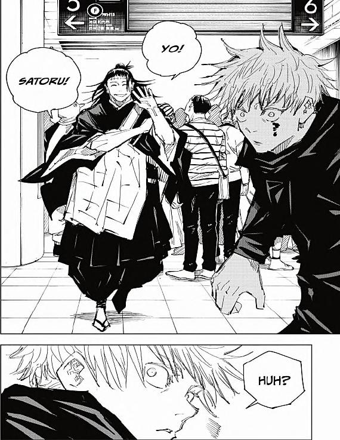
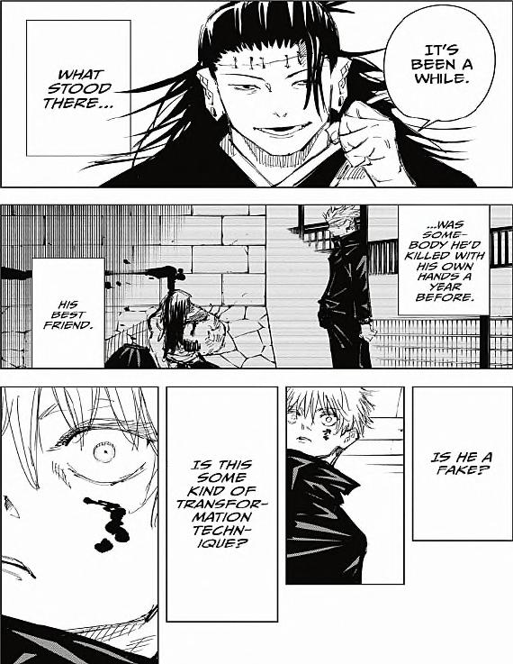
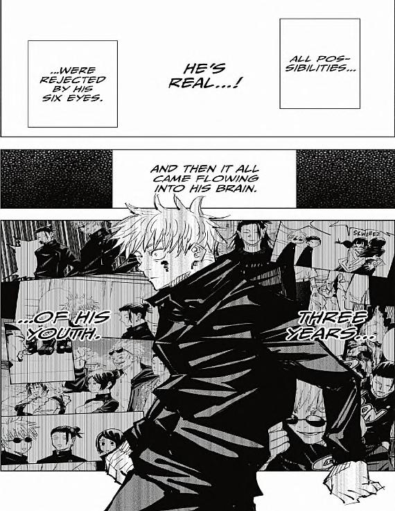
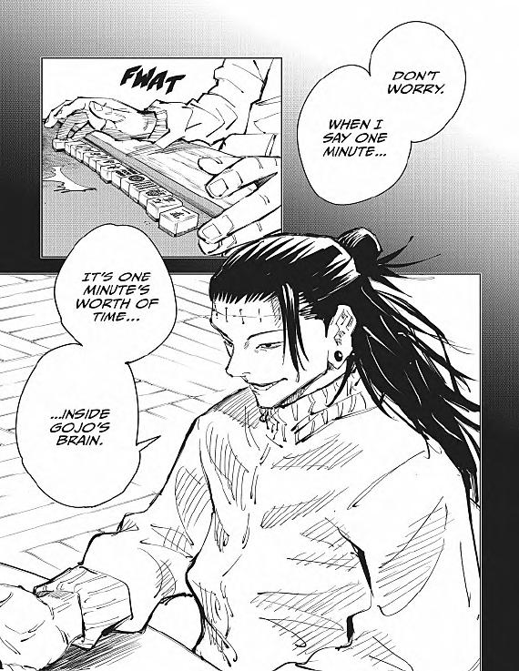

Jujutsu Kaisen Chapter 89-90
Home
|
Pages 33-36
|
Pages 37-40
|
Pages 41-42
Easy Access to the Manga
To view these pages on the internet archive,
click here
.

GETO: YO!
SATORU!
GOJO: HUH?

GETO: IT'S BEEN A WHILE.
WHAT STOOD THERE...
...WAS SOMEBODY HE'D KILLED WITH HIS OWN HANDS A YEAR BEFORE.
HIS BEST FRIEND.
IS THIS SOME KIND OF TRANSFORMATION TECHNIQUE?
IS HE A FAKE?

ALL THE POSSIBILITIES...
GOJO'S THOUGHTS: HE'S REAL...!
...WERE REJECTED BY HIS SIX EYES.
AND THEN IT ALL CAME FLOWING INTO HIS BRAIN.
GOJO'S THOUGHTS: THREE YEARS...
...OF HIS YOUTH.

FWAT
GETO: DON'T WORRY.
WHEN I SAY ONE MINUTE...
IT'S ONE MINUTE'S WORTH OF TIME...
...INSIDE GOJO'S BRAIN.
Pages 36-39 of Jujutsu Kaisen Chapter 90 Volume 11